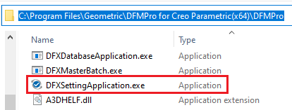
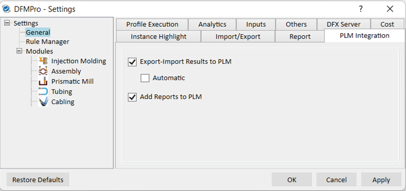
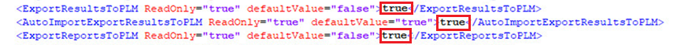
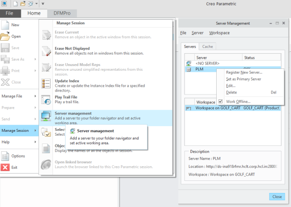
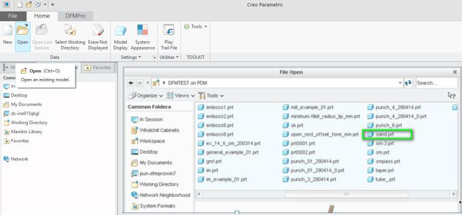

PTC Windchill は、製品から収集された複数のデータを統合して表示する、製品ライフサイクル管理（PLM）アプリケーションです。
DFMPro for Creo Parametric は、PLM Windchill とシームレスに統合して、パーツのリビジョンに基づく DFMPro 結果のトレーサビリティを維持できます。これは、製品ライフサイクルのあらゆる段階で品質、信頼性、リスクを管理するうえで有用です。また、コスト削減、イノベーションの加速、次世代製品の強化にも役立ちます。
ワークフロー例 では、PLM（Windchill）統合と併用して DFMPro for Creo Parametric を使用する方法を示します。
DFMPro for Creo Parametric のインストール
PTC Windchill 13.0.2 およびそれ以前のバージョン
DFMPro Settings を使用した構成
PLM 統合の設定を変更できるのは管理者のみです。設定に基づき、DFMPro の結果とレポートは PLM システムに保存されます。既定では、これらの設定はチェックされていません。
詳細については、DFMPro Settings ページの PLM Integration セクションを参照してください。
管理者マシンに DFMPro for Creo Parametric をインストールすると、DFXSettingApplication.exe が次のインストール先に配置されます。
例：C:\Program Files\Geometric\DFMPro for Creo Parametric(x64)\DFMPro

DFXSettingApplication.exe を右クリックし、コンテキストメニューから Run as administrator を選択します。
General タブをクリックし、続けて PLM Integration サブタブをクリックします。

すべてのチェックボックス（Export-Import Results to PLM および Add Reports to PLM）を選択します。
Apply ボタンをクリックし、その後 OK ボタンをクリックして閉じます。
注：
これはグローバルレベルの設定です。管理者が実施した変更は、すべてのエンドユーザーに適用されます。
DFXCreoSettings.xml 設定ファイルを中央の場所（サーバー）に配置します。
設定ファイルを Notepad または Notepad++ で開きます。
PLM 設定を検索します。
（下図のように）PLM 設定を有効にするために true と入力します。

ファイルを保存して閉じます。
注：
この設定ファイルを参照するすべての DFMPro インストールに対して、PLM 設定が有効になります。
保存対象のパーツに対して Windchill をプライマリサーバーとして構成するには、次の手順に従います。
Creo Parametric を起動します。
File メニューをクリックします。
Manage Session をクリックし、続けて Server Management オプションを選択して Windchill サーバーを構成します。
必要なサーバー名を選択（ハイライト）し、Set as Primary Server を選択します。

構成後、Windchill サーバーからパーツを開きます。
